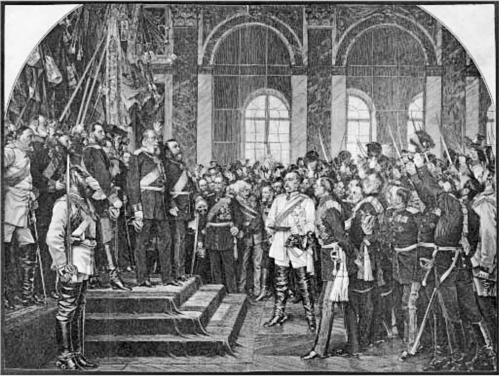

1800年前后的德国与其说是个地理概念，不如说是个文学表达，促使它产生政治含义的人大约是拿破仑。他强行取消了教会领地，把封邑数量从三百多个骤降到约四十个，把余下的政治单元组建为一个由主权国家组成的联邦，这一切甚至发生在1806年神圣罗马帝国正式瓦解之前。在同一年，普鲁士毁灭性的挫败迫使它开展现代化的计划，为接下来的一个半世纪确定德国的社会和政治结构。不过，这场现代化进程没有采取法国的共和政体的形式。尽管在有必要号召民众去卸掉国王脖子上的拿破仑枷锁的时候，宪政也曾短暂地兴盛过，但它自1819年的《卡尔斯巴德决议》制定之后就被抛弃了，该决议把德国变成了一个由极权国家组成的邦联，一直维持到1848年。普鲁士商业、工业和专业人士中的中产阶级仍然太弱，无法挑战国王，甚至难以挑战地主贵族（容克），也不能引进代议政府或立法与行政的分离。相反，成功争取到权力的是国王的官员，18世纪的独裁专制主义让位于19世纪的官僚专制主义—法治、杜绝有意的腐败和倡导共同的福利，但在社会各阶层强制实行军事化的纪律。国王的个人决定仍然是最终有效的，只是这些决定越来越多地经过斡旋，一定程度上受到文武官员们的核查，贵族逐渐被吸收到那些人群之中—部分是为了遏制中产阶级的野心。新生的普鲁士是德国新教国家中最大、最具实力的，一旦旧帝国的框架消失，对其同伴们来说，它就具备了全新的意义。1806年之前的各领地尚能作为一个更大整体的组成部分，只是这整体松散且摇摇欲坠，可是现在各个邦国必须证明自己能够在经济和政治上自给自足。在这一任务面前，除了普鲁士、奥地利，或许还有巴伐利亚，没有谁可以假装已经完成。必须找到它们之间的某种关联。有一个消极的政府间“联邦”是由奥地利主导的，还有一个高效得多的关税同盟是由聚集在普鲁士周围的数量较少的领地组成的，然而“德国”这个词此时还意味着某些未来和虚幻的东西。如果它曾经指的是说德语和写德语的帝国及其他任何附属于帝国的地区，如今它则意味着一个政治单元，所有或绝大多数说德语的人会在其中找到自己的家。此处有一个难题：到底谁将被纳入这个未来的德国？同时容纳普鲁士和奥地利几乎是不可能的，旧帝国和新联邦都无法结合两者（尽管这在许多梦想家眼中是有可能的，《德意志，德意志高于一切》 [2] 的作者也是其中之一），但是同样也很难排除它们，因为它们对小国施加的影响太大，并且频繁干涉别国事务。实际上，这两个大国也在为自己寻求解决问题之道：普鲁士故意向西扩张到莱茵地区，奥地利则从德国事务中抽身，开始关注位于东欧和意大利北部的非德语地区。最终，德国北部的新教知识分子仍然像处于旧政权统治之下的时候一样，依靠出版业和大学的关系网团结在一起，与普鲁士共命运。经过十年日益激烈的躁动，在1848年，欧洲的“革命年”，迎来了法兰克福议会的召开，四分之一的与会者是学者、神职人员和作家，议会于1849年向普鲁士君主献上了一个不含奥地利的德国的王位。弗里德里希·威廉四世拒绝接受臣民们通过自由决策赐予他的统治权—“从阴沟里捞上来的王冠”。当俾斯麦于1866至1871年间用武力做了保障之后，他的兄弟威廉一世接受了同样的“小德意志”王冠。
某种程度上这是一场教授的革命，或许意义更加深远。1848年失败的德国革命是官员的革命，是18世纪的读书人的最后一幕，也是最辉煌的时刻。它试图通过宪法和行政手段来统一德国，同时保留政府和君主制政府在社会结构中的主导地位。但是，德国中产阶级内部的权力平衡已经从根本上开始转变。1815至1848年间，人口增长了60%，随着贫困状况的加剧，就业需求扩大。19世纪30年代，创业开始获得国家赞助。到了19世纪40年代，利用（常常是外国）在铁路网上的巨大投资，工业化的第一次浪潮来临了，它主要发生在关税同盟内部，经济回升随之而来。这十年以经济和政治的崩溃告终，和工业化前的饥荒（部分起因于摧毁爱尔兰的那种马铃薯枯萎病）一起导致了一场（类似爱尔兰的）移民潮。然而在接下来的20年里，自1862年起处于俾斯麦治下的普鲁士接受了经济自由主义，并将其作为扫清历史和体制性障碍、统一异质领土的手段。长时期的深入发展随之开始了，誓要把德国改造成工业巨头。到1871年德意志第二帝国成立之时，它拥有了资产阶级，一个拥有财产并能创造财富的阶级，它比第一帝国的任何阶级都更大、更富有、更有助于实现共同利益。它对文学和哲学影响深远。这个阶级甫一诞生，就与历史悠久的国家权力的中产阶级工具—官员—争夺自尊和文化认同。公务员的职位与多个权力中心息息相关，而觉醒的资产阶级对德国经济和政治的统一更感兴趣。进入资产阶级的行列也不依赖大学文凭。19世纪早期，特别是在普鲁士，资产阶级失落的政治野心就已经表露为逃避文学中的“浪漫主义”，但随着浪漫主义的发展，它的文学文化蒙上了一层更清晰的革命和反官僚色彩—尽管对立的立场泄露了对它的对手的长久依赖。文学在法兰克福遭受了德国官方的羞辱之后，工商业还是在国家的批准下蓬勃发展起来，各种自卑感都已经消失，上个世纪的形象被付之一笑，文学变成了一项有收益的事业，因为版权得到了保护。在通俗领域诞生了含有金钱、物欲主义、社会公平等资产阶级主题的小说和戏剧，在一定时期内将德国和西欧的书写文化相连接。这种独特的—外人也许难以理解的—18世纪晚期黄金时代的德国文化，是博学的、人道主义的和世界主义的，在小宫廷的庇护下，躲在政治事件和经济动荡的避风处生存下来直到1848年，但此后它沦为学院主义，或在巴伐利亚国王们的身上，变成怪僻。尽管官僚阶级已经丧失至高地位，但它并没有失去权力，它无视私人文化团体和基金会的数量增长，仍然通过大学维持自己作为民族历史监护人的地位。所有人都希望对德国进行重新定义，所以国家公务员能够为自己保留一定的权威。中产阶级内部的两个主要派系消除了分歧，转而一致追求国家利益。“教化”同时意味着“文化”和“教育”，它是意识形态的媒介，在其中可以实现两者的融合。它是所有人都会认可的价值，因为它对你如何取得教化采取了谨慎的暧昧态度：无论是通过上大学还是仅仅通过阅读，或至少是通过喜欢正确的书籍。“受教育的市民”这一概念此时备受推崇，至今依然如此。“教化”的经历可以将中产阶级统一起来，这主要是为了把官僚和资产阶级联系起来，创造国家公务员与商人、业主、自雇专业人士之间的利益共同体。定义“教化”的一个关键步骤是把官僚阶级的文学成就奉为“经典”。1871年的德国不仅要成为一个像英国或法国那样的国家—它还想和它们一样拥有自己的文学经典。
在俾斯麦的新德国，资产阶级有了容身之所，却也处处受限。资产阶级被赐予在帝国议会和次要的邦国集会上的发言权，但是执行机关及帝国总理并没有正式对这些议会负责。当然在实践中，总理需要这些议会的合作，以确保他的立法计划能够实施，官僚因而失去了在本世纪前期享有的几近绝对的权力。然而在一个强制服兵役的社会里，主导模式是由军队建立的（包括给贵族预留上级军衔），俾斯麦及其继任者把一切想要建立议会责任制的尝试都当作反叛行为来处理：社会党事实上被取缔了十多年。在民族团结高于一切的原则下，独裁政权的代理人继续轻视那些被他们视为自私自利的个人主义者和唯物论者，因为他们为自己赚钱，而不是从政府那里获得薪水。在“教化”的世界里也是如此，共同献身于民族传统的信念掩盖了为生计写作的人和大学知识分子之间的深刻仇恨，后者的文学活动主要局限在历史和批判性研究之中。和俾斯麦一样，“日耳曼学”（人们开始这么称呼）的教授并不喜欢资产阶级，就像他们对待社会党人、天主教徒、犹太人或女性一样。不幸的是，当时的女性也和资产阶级一样，想要涉足民族文学。

图2 威廉一世宣布成为德国皇帝，1871年1月1日，凡尔赛宫镜厅（安东·冯·维尔纳绘，1885）。俾斯麦居中。1919年德意志第二帝国结束时，《凡尔赛条约》也在同一房间里签订
在1848至1849年的动荡时期，一位德国哲学家为一小群英国激进者起草了一本不起眼的小册子，标题叫作《共产党宣言》。它预言，民族资产阶级渴求的自由市场将会发展成一个全球性的市场，一个“世界市场”。到了19世纪70年代，预言显然应验了。不过德国的全球化初体验却是痛苦不堪的。1873年从维也纳发端的全球股市崩盘导致了长期的萧条，直到90年代才恢复。德国的萧条相对轻微，有些增长还在继续，尽管80年代的净迁移（在过去的40年里共计300万）达到了历史最高水平130万—这个数字本身就是全球化强度的一个体现。1879年，进口美国廉价粮食对土地所有者容克阶级的收入影响动摇了俾斯麦，他也因此听取了其他领域不断增长的保护需求，尤其是在战时具有重大战略意义的重工业。他决定放弃早期的自由贸易政策，在他的新国家周围设立关税壁垒。与此同时，他借用天主教会结束了他的“文化战争”，并努力通过引入欧洲的首个社会保障体系来打击工人运动。他建立“国家社会主义”（它很快就被如此称呼）的动机和先前没什么不同，它们深深根植于德国的历史：首先是国家统一这一压倒性的需求，其次是以统治阶级的地位继续维护普鲁士农业贵族的利益。但是，德国和欧洲其他国家此时开始的贸易保护主义甚至最终被英国采纳，而英国长久以来都是自由贸易最坚定的拥护者和最大的受益者，这加剧了欧洲和世界的分裂，使之变成一个个准自给自足的集团。由于没有哪个国家的政客能够设想出一种国际秩序，能团结众多彼此竞争的、发展中的经济体，因此各个工业国家，无论是帝国、联邦还是单一制国家，都在着手实现经济和政治的—也就是军事的—自给自足。1884年德国开始索求非洲和南太平洋的殖民地，这与其说是严肃的地缘政治举动，不如说是一个象征性的刺激。如同海军的大规模扩张一样，这是一份声明，表明德国和其他任何国家是平等的，可以自己照顾自己。19世纪90年代，经济增长普遍恢复，人们清楚地看到，凭借由世界上规模最大的化学和电力工业，以及正在赶超英国的煤炭和钢铁工业支撑起来的武装力量，德国不一定要取代大英帝国，但一定有能力对抗它的强权，以贯彻自己的意志。英国的霸权正在给一个两极化的世界让路，在世纪交替的时候，文化领域里类似冷战的事件开始出现。英国摒弃了德国模式，特别是在阿尔伯特亲王临政以来负有盛望的哲学和学术领域；与此同时，德国的声音则在强调德国文学、音乐和哲学成就的独一无二，以及在唯物论和传媒业的（即资产阶级的）西方“文明”的污染中保护“文化”（由官僚阶级创造）的需要。把本质不同的元素融合在“受教育的市民”这一概念中，这种做法虽然遭到第二帝国一些眼光最锐利的批评家的拒绝，却仍然保持了下来，其途径是把压力向外投射到国际关系中去，并为新的德国确定独特的角色。此时的英国和法国也在编织相似的神话，宣扬各自在世界历史上的特殊使命。关税壁垒成为头脑中的壁垒，其心理效果和经济畸形同样糟糕，不断给不成熟的国际政治秩序增添压力。欧洲各国臆想了十多年自己的特殊性之后，终于在1914年，战争游戏成为现实。